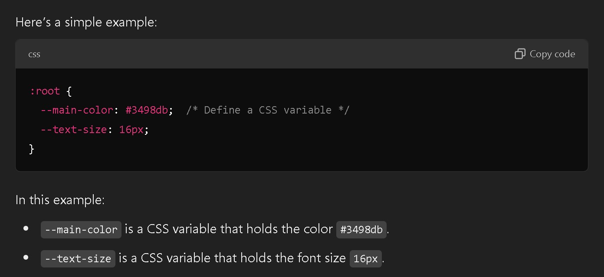

My Website
Contact Me
By email
What are CSS variables?
What Are CSS Variables?
CSS variables, or custom properties, are like named values you set up in your CSS code to be reused wherever you
need.
They allow you to set a value once, like a color or font size, and then use it in multiple places. This can be really
helpful for keeping styles consistent and easy to update.
Think of it like this:
1. In JavaScript, you might write: let mainColor = "#3498db"; to store a color.
2. In CSS, you can do something similar with a CSS variable: --main-color: #3498db;
Once you set up a CSS variable, you can refer to it throughout your CSS file using var(--main-color). This makes
your
CSS much easier to manage and change.
How CSS Variables Work
Define the variable (give it a name and a value).
Use the variable (refer to it by name wherever you need it).

In this example:
--main-color is a CSS variable that holds the color #3498db.
--text-size is a CSS variable that holds the font size 16px.